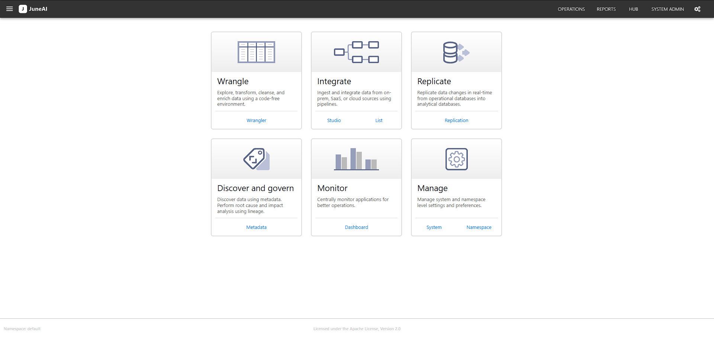
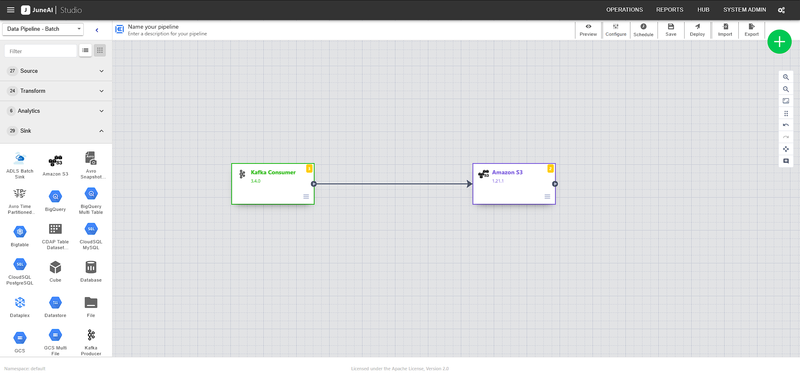
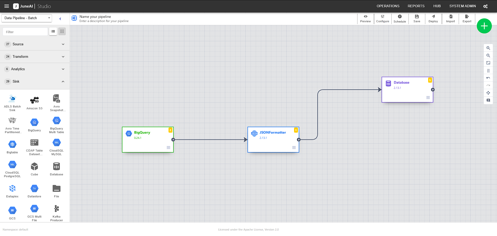

1. 관측가능성과 오픈텔레메트리 — 그리고 그 한계
JuneAI 온톨로지의 토대는 관측가능성(Observability)이다. 운영 중인 시스템이 남기는 추적(trace)·지표(metric)·로그(log)를 모아, 그 관계로 온톨로지를 세운다. 표준 수집 규격으로는 오픈텔레메트리(OpenTelemetry)가 널리 쓰인다.
그런데 오픈텔레메트리만으로는 레거시와 다양한 예외 상황을 다루는 데 분명한 한계가 있다.
- 추적 전파가 끊긴다 — 호출이 일정 구간을 지나면 추적(trace) 연결이 중단되어, 전 구간을 하나로 잇지 못한다.
- 비동기·이벤트 처리가 어렵다 — 메시지 큐·이벤트 기반 흐름에서는 인과관계를 따라가기가 까다롭다.
- 레거시 계측이 지원되지 않는다 — 전통 시스템(메인프레임·TP 모니터 등)은 표준 계측이 닿지 않는다.
✅ JuneAI는 이 문제들을 해결했다. 끊긴 추적 전파를 잇고, 비동기·이벤트 흐름을 따라가며, 레거시 내부까지 계측한다. 그래서 관측가능성만으로도 전 구간이 이어진 온톨로지를 세울 수 있다.


2. 원래 온톨로지는 "데이터 플랫폼"을 전제한다
온톨로지는 기본적으로 데이터 플랫폼을 기반으로 한다. 즉, 데이터 플랫폼 없이는 온톨로지 구성 자체가 어렵다. 데이터 플랫폼 기반의 온톨로지는 파이프라인 · 레이크 · 메타데이터 · 리니지를 두루 필요로 한다.
문제는 이것이 단순히 "기술적으로 가능한가"의 문제가 아니라는 점이다.
- 시스템 증설 — 저장·연산 인프라를 새로 들여야 한다.
- 인력 확보 — 데이터 엔지니어·플랫폼 운영 인력이 필요하다.
- 일정 조율 · 예산 산정 — 여러 조직이 엮인 복잡한 의사결정이 뒤따른다.
복잡한 의사결정과 조직 간 협업·역할 분담을 생각하면, 부서 수준에서 온톨로지를 도입하는 것은 사실상 불가능에 가깝다.
이미 데이터 플랫폼이 있어도 더 어렵다
기존에 데이터 플랫폼이 잘 운영되고 있다고 가정하면, 팔란티어 같은 온톨로지 기반 플랫폼을 또 얹는 일은 오히려 더 어렵다.
- 중복 — 기존 데이터 플랫폼과 기능이 겹친다.
- 접근법의 차이 — 업무 중심의 온톨로지 접근은 기존 방식과 결이 다르다.
- 조직의 반발 — 기존 데이터 조직의 저항이 생길 수 있다.
즉, 온톨로지 도입에는 기술적 문제뿐 아니라 조직을 포함한 다양한 고려사항이 존재한다.
3. 온톨로지를 올렸다고 끝이 아니다
온톨로지가 도입되었다고 해서 과제가 끝난 것은 아니다. 오히려 그 뒤의 일이 더 크다.
사실 온톨로지는 일부분일 뿐이다. JuneAI가 원하는 방향은 문제를 분석하고, 최적의 의사결정을 돕고, 이 모든 과정을 에이전트가 자율적으로 처리하는 것이다. 온톨로지는 전체 과정에서 아주 작은 일부분이며, 그 이상도 그 이하도 아니다.
- 적용 전 — 문제를 분석하고, 우선순위를 정하고, 온톨로지에 반영하기 전 컨설팅이 필요하다.
- 적용 후 — 온톨로지로 문제를 식별하고, 원인을 분석하고, 해결책을 시뮬레이션하는 후속 업무가 이어진다.
전체 문제 해결 과정에서 온톨로지 구축은 일부분일 뿐, 후속 업무가 훨씬 많다. 그래서 질문은 하나로 모인다 — "이 복잡한 온톨로지 구성과 문제 해결을, 어떻게 하면 단순하게 만들 수 있을까?"
4. JuneAI의 해결책은 꽤 단순하다 — 데이터 플랫폼을 최소화하고, 관측을 먼저 쓴다
JuneAI의 답은 의외로 간단하다. 데이터 플랫폼을 최소화한다. 데이터 플랫폼을 새로 구축하는 일은 개발 비용이 크고 기간도 오래 걸리기 때문에, JuneAI는 이미 시스템이 내보내고 있는 관측가능성(Observability)을 먼저 활용하는 쪽을 선호한다. 가능한 한 관측만으로 온톨로지를 세우고, 데이터 플랫폼은 꼭 필요한 곳에만 둔다.
그렇다고 데이터 플랫폼을 배제하는 것은 아니다. JuneAI는 우수한 데이터 플랫폼 도구도 함께 제공한다 — 관측만으로 닿지 않는 영역에는 차선책으로 데이터 플랫폼을 병행한다. 결국 계측(관측)과 데이터 플랫폼을 상황에 맞게 적절히 병행하는 것이 중요하다.
- 데이터 조직과의 협업이 필요 없다 — 단위 부서가 주도적으로 적용할 수 있다.
- 별도 예산·조직 간 협업이 필요 없다 — 투자 비용 · 개발 기간 · 커뮤니케이션 비용을 모두 줄인다.
- 관측가능성을 먼저 쓴다 — 무거운 파이프라인·레이크를 최소화하고, 운영이 남기는 신호만으로 온톨로지를 세운다.
- 데이터 플랫폼은 차선책으로 병행 — 꼭 필요한 곳에는 JuneAI의 우수한 데이터 플랫폼 도구로 보완한다. 계측과 데이터 플랫폼을 상황에 맞게 적절히 병행하는 것이 핵심이다.
- 자율 운영은 덤 — 필요하면 AIOps 기반 자율 운영까지 얹고, 업무별 온톨로지와 하네스가 적용된 에이전트에만 집중할 수 있다.
| 구분 | 🏗️ 데이터 플랫폼 기반 | 👁️ JuneAI 관측 기반 |
|---|---|---|
| 토대 | 파이프라인·레이크·메타·리니지 | 관측가능성(추적·지표·로그) |
| 필요 조직 | 데이터 조직과의 협업 필수 | 단위 부서 단독 주도 |
| 도입 | 부서 단독으로는 사실상 불가능 | 단위 부서가 주도적으로 가능 |
| 예산·일정 | 증설·인력·예산 산정 필요 | 별도 예산 없이 빠르게 |
| 레거시·비동기 | 표준 OTel만으로는 한계 | 전파·비동기·레거시까지 보강 |
| 그 다음 | 후속 업무가 또 하나의 큰 숙제 | 업무별 온톨로지+하네스 에이전트에 집중 |
5. JuneAI의 데이터 플랫폼 도구 — 필요하면 병행한다
관측만으로 닿지 않는 영역에는 데이터 플랫폼을 차선책으로 병행한다. JuneAI는 이를 위한 우수한 데이터 플랫폼 도구를 함께 제공한다.




6. 정리 — 가볍게, 부서가, 바로
- 관측가능성이 토대 — 데이터 플랫폼을 최소화하고, 운영이 이미 남기는 신호를 먼저 써서 온톨로지를 세운다.
- 데이터 플랫폼은 병행 가능 — 꼭 필요한 곳에는 JuneAI의 데이터 플랫폼 도구로 보완해, 계측과 적절히 병행한다.
- 오픈텔레메트리의 한계를 넘는다 — 끊긴 추적 전파·비동기·레거시 계측까지 JuneAI가 보강했다.
- 조직의 벽을 넘는다 — 데이터 조직 협업·별도 예산 없이, 단위 부서가 주도적으로 도입한다.
- 비용과 시간을 줄인다 — 투자 비용·개발 기간·커뮤니케이션 비용을 함께 낮춘다.
- 본질에 집중한다 — 자율 운영은 덤, 업무별 온톨로지와 하네스 에이전트에 역량을 모은다.
온톨로지를 올리는 일이 더 이상 전사 프로젝트일 필요는 없다. JuneAI는 관측가능성 위에서, 부서가 바로 시작할 수 있을 만큼 가볍게 온톨로지와 에이전트를 올린다.